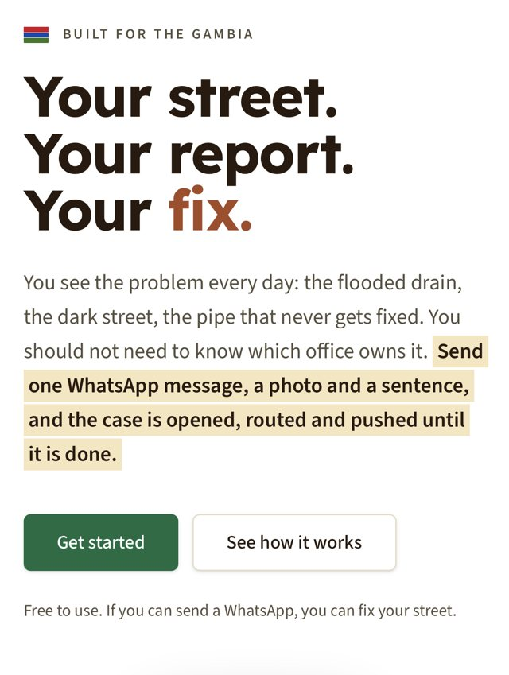
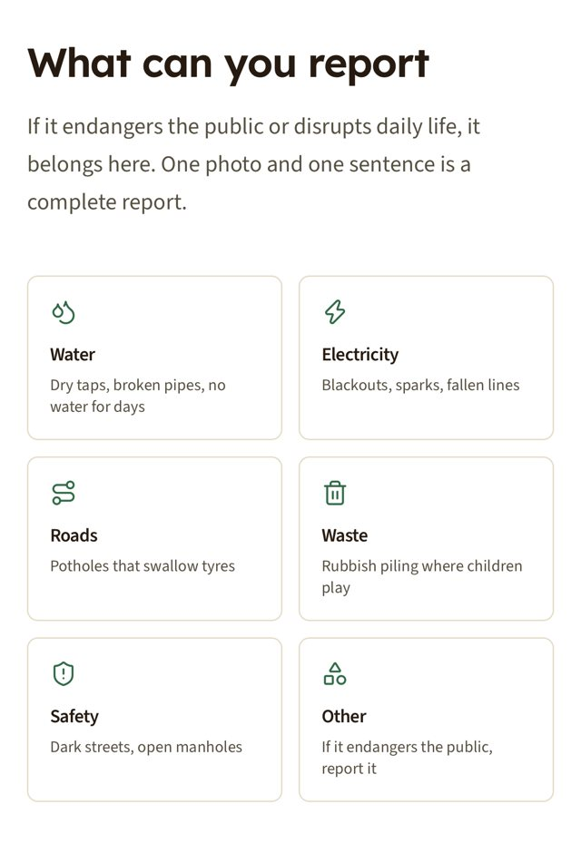
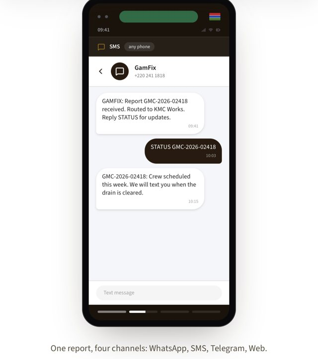
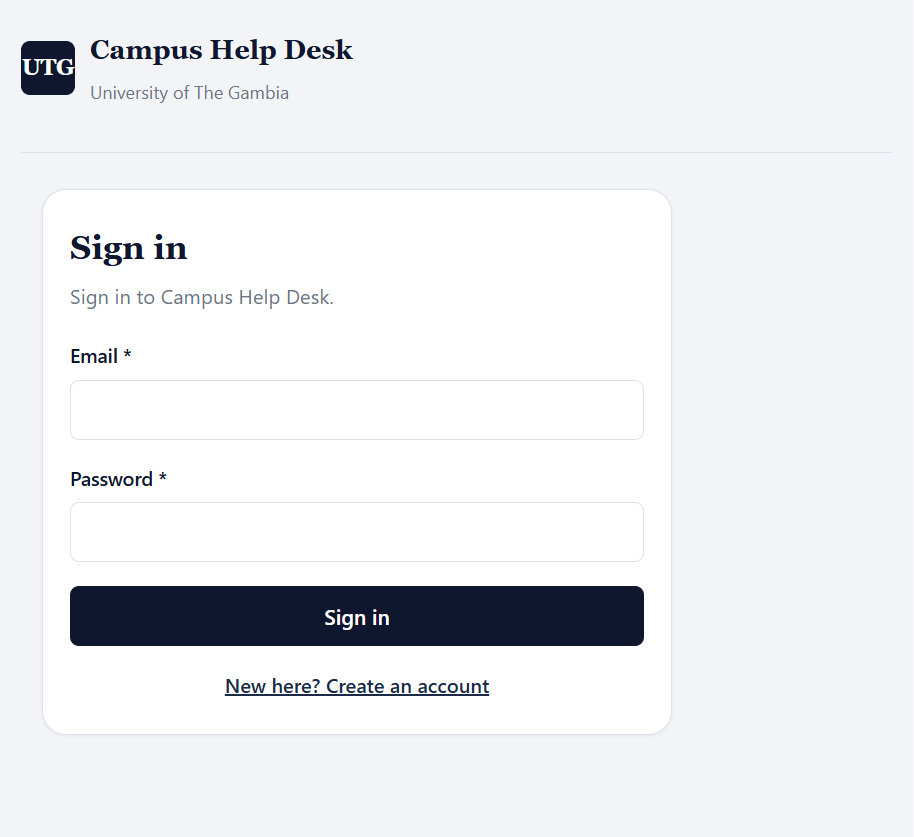
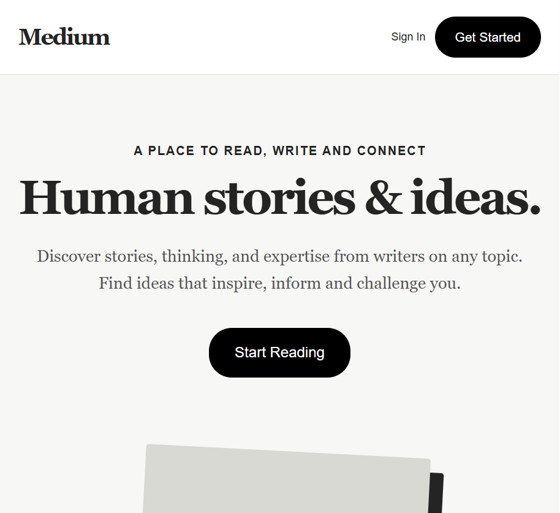
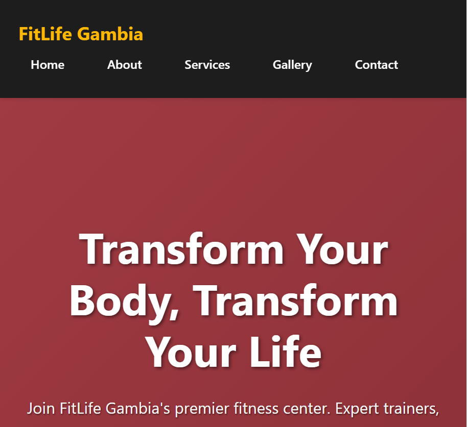
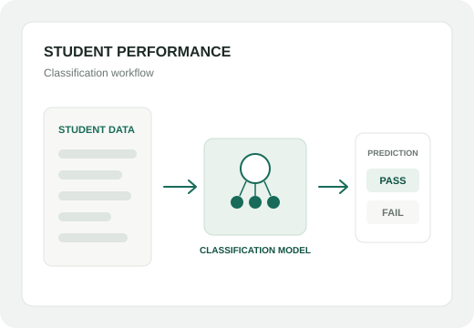
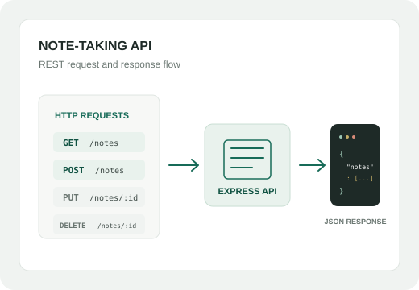

Education
I am a third-year BSc Information Systems student at the University of The Gambia, School of Information Technology and Communication. My studies include Java, object-oriented design, cloud computing, access control and systems analysis.
My work includes responsive websites, a campus help desk and Express APIs. I am interested in building practical digital services for people in The Gambia.
I am a third-year Information Systems student learning software development by building and testing real projects.
I am a third-year BSc Information Systems student at the University of The Gambia, School of Information Technology and Communication. My studies include Java, object-oriented design, cloud computing, access control and systems analysis.
I started learning web development at Jasseh Code Camp in August 2025. Since then, I have continued with HTML, CSS, JavaScript, Node and Express. I like to build small, finish what I start and learn from feedback.
I led BETECHIFIED, a ten-person frontend team working across The Gambia, Nigeria, Ghana and Sierra Leone. My hackathon team won first place at UTG-ITCA Hackathon 1.0, where I contributed to testing, bug fixing, naming, design and branding.
I am working toward a career in software engineering and hope to pursue postgraduate study abroad. For now, I keep learning by building one project at a time.
A selection of team projects, coursework and practice builds.
Report a water, electricity, road, waste or safety problem with one photo and one sentence, by WhatsApp, SMS, Telegram or web. Built by a team of five for Challenge 01. I handled testing, bug fixing, the name, the design and the branding.
Demo


A web-based complaint management system for the University of The Gambia with student, lecturer and admin roles, about 85 real courses and 38 lecturers, meeting scheduling, and a flag for unanswered complaints after 48 hours.
View live
A Medium-inspired landing page built in HTML and CSS by a ten-person team across four countries. I led the group, coordinated the work and kept submissions on schedule.
View live
A five-page business website deployed on GitHub Pages, built during my frontend bootcamp to practise structure, responsive layout and clean styling.
Visit live site
A classification model that predicts student pass or fail outcomes, built with Python, NumPy, Pandas and scikit-learn.

Project illustrationAn Express.js API built as a group project to practise creating, reading, updating and deleting notes. I tested the endpoints with Postman.
View source code
Project illustrationA third-year degree, a frontend bootcamp, and a steady habit of building real things and finishing them.
Joined Jasseh Code Camp and began learning web development.
Led a ten-person team across four countries and presented the final project.
Won UTG-ITCA Hackathon 1.0 with GamFix.
A software engineering career, then postgraduate study abroad.
Working with people across West Africa
Open to internships, collaborations and conversations about frontend work.
Get in touch